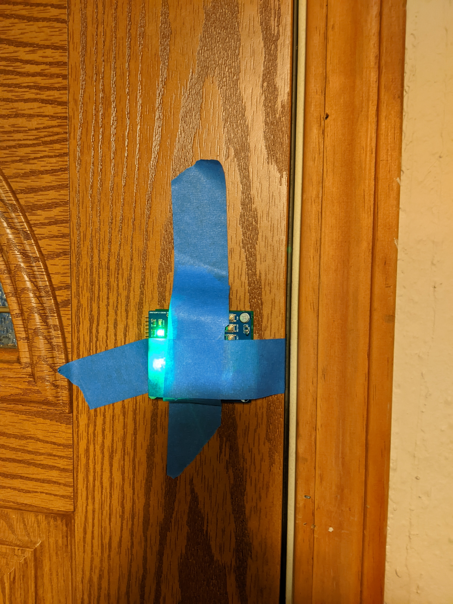

Door Counter
The goal of this experiment is to count the number of times a door in Brown Building is opened and closed between classes and by extension the number of people that pass through that door. I would suggest using the 10-minute window before classes start. You will do this by taping the development + daughter board combo to the door. Make sure that you remove all the tape from the door after your experiment. And, please stay in proximity of your experiment while it is being performed so that you can explain to passers-by what is going on.

Using a low sampling rate will make post-processing the data easier. You should use one of the gyroscope axis to determine the rotational rate the door is being opened. I would advise doing a short test run to verify your data logging configuration before doing the full experiment.
- Spool the data into a csv file.
- Open this csv file in Excel and immediately save it in the native Excel format.
- Make a column to the left of the raw data which is the time (in seconds) for each sample.
- Make a column called degree per second. Each entry in this column is the raw data converted into a degree/second value using the full scale range of the gyroscope that you configured.
- Make a column called degrees moved per sample. Each entry in this column is the degree/second entry multiplied by the sampling period of the gyroscope that you configured.
- Make a column called degrees moved overall. Each entry in this column is the sum of all the degrees moved per sample up to that time.
When I performed this experiment at my front door, I got a graph that looked something like the following. Note that there was drift in the resting position of the door. This is to be expected.

Fully label both axis and title your graph with a description of where and when you performed the experiment. Finally, make sure to indicate somewhere, how many people when through the door.